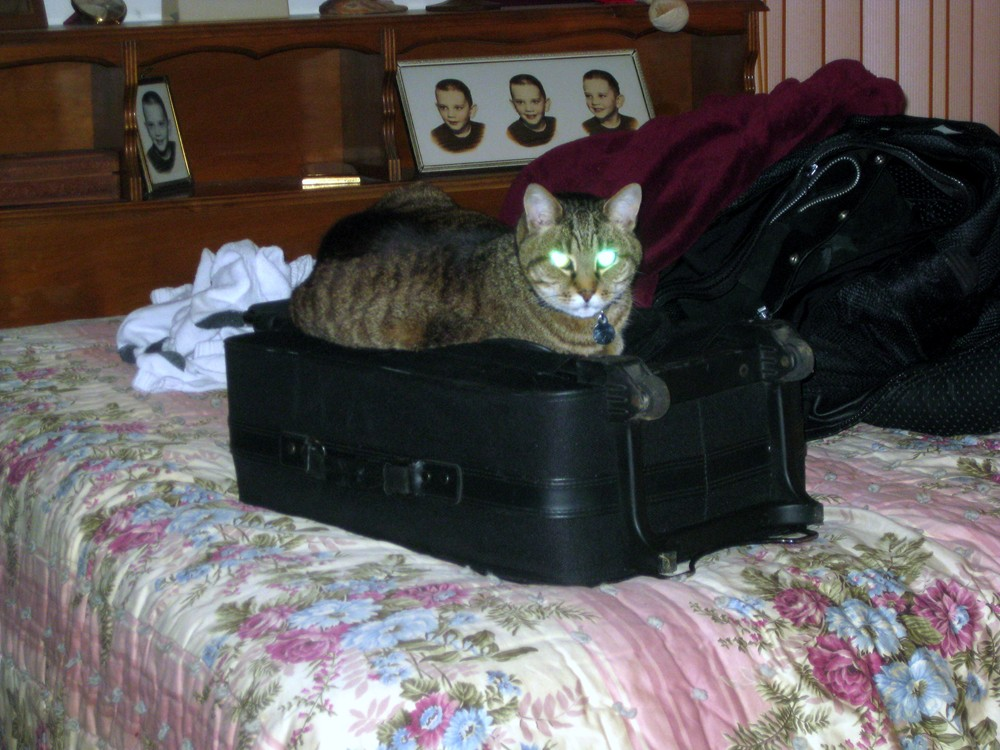
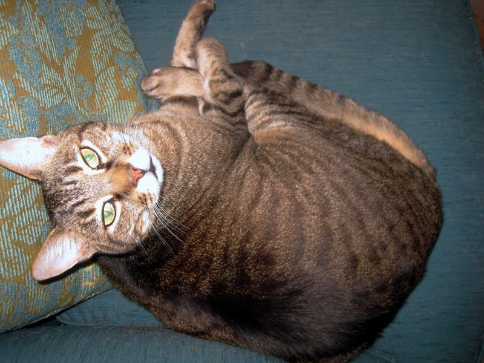
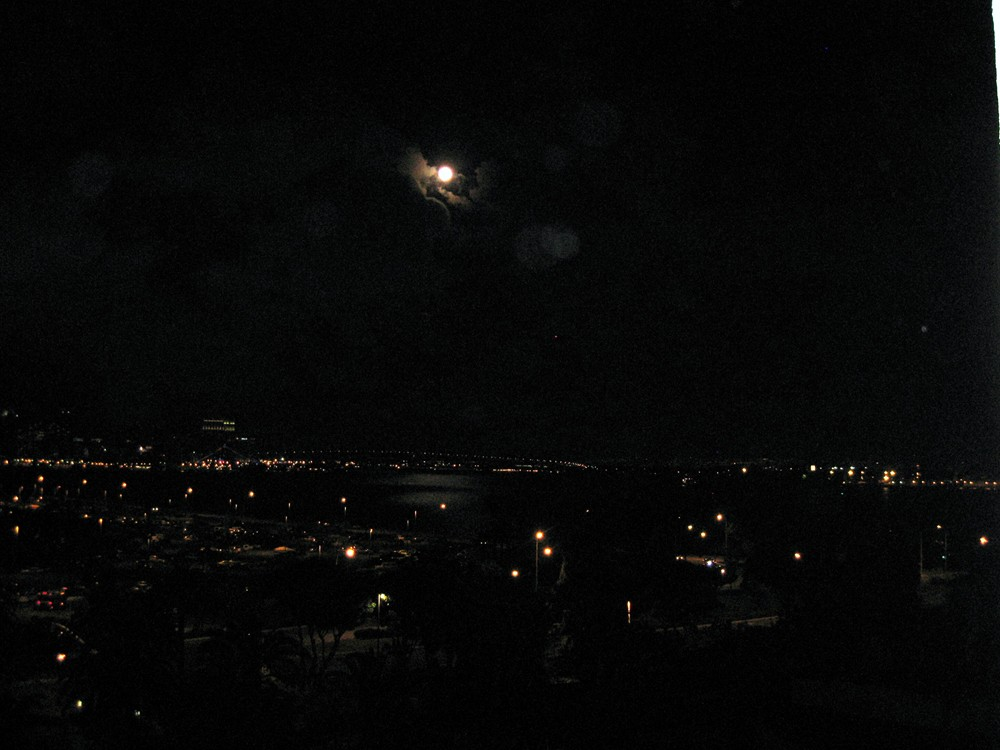
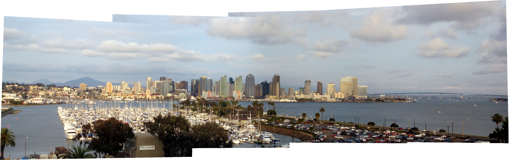
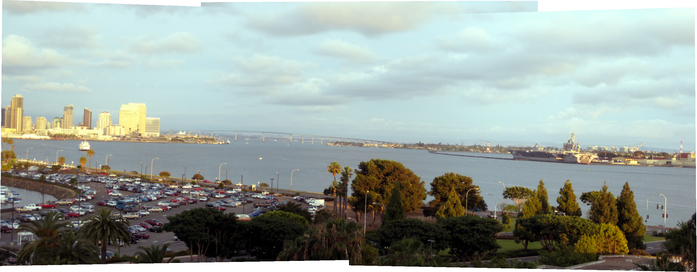
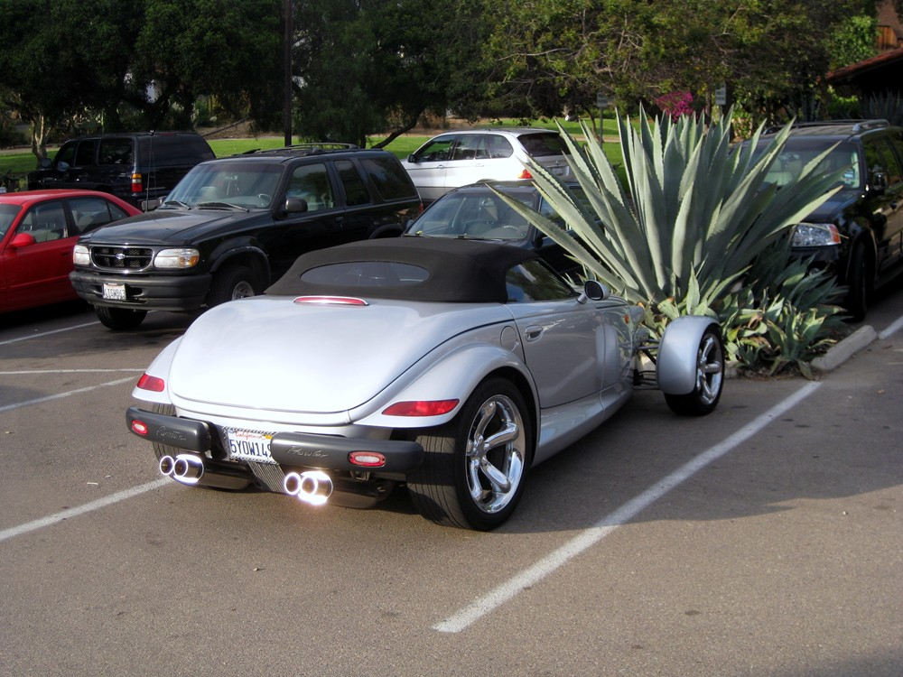

San Diego 09
Flew into San Diego for a week of meditation retreats at the SRF Encinitas Ashram, Ox Yoke Retreat, and Hidden Valley Ashram. Needed this--recently acquired a new project at work (State Dept. Global Visa System) that's in startup mode with an aggressive schedule and really intense.
 |
 |
|
Rex tries the Jedi mind trick to stop me from leaving. |
Ruling Sharon's house from silk cushions while I'm away. | Back home on the Turquoise Throne |
 |
|
| Arriving San Diego. I had two Expedia reservations at the same hotel on consecutive nights. | In order to combine the reservations, the hotel gave me a better room than I'd paid for...city and harbor view (see below). |


 |
The Encinitas retreat couldn't take me until Monday, so I drove up for the Sunday service, then back to San Diego, where I hung out in Old Town (mostly Mexican crafts stores and restaraunts). Spotted in the Old Town parking lot. Despite growing up in LA, I didn't get into car culture that much. I did cruise Whittier Blvd. in a 59 Chevy and wouldn't mind having a low rider--a good paint job runs around $30K though. |